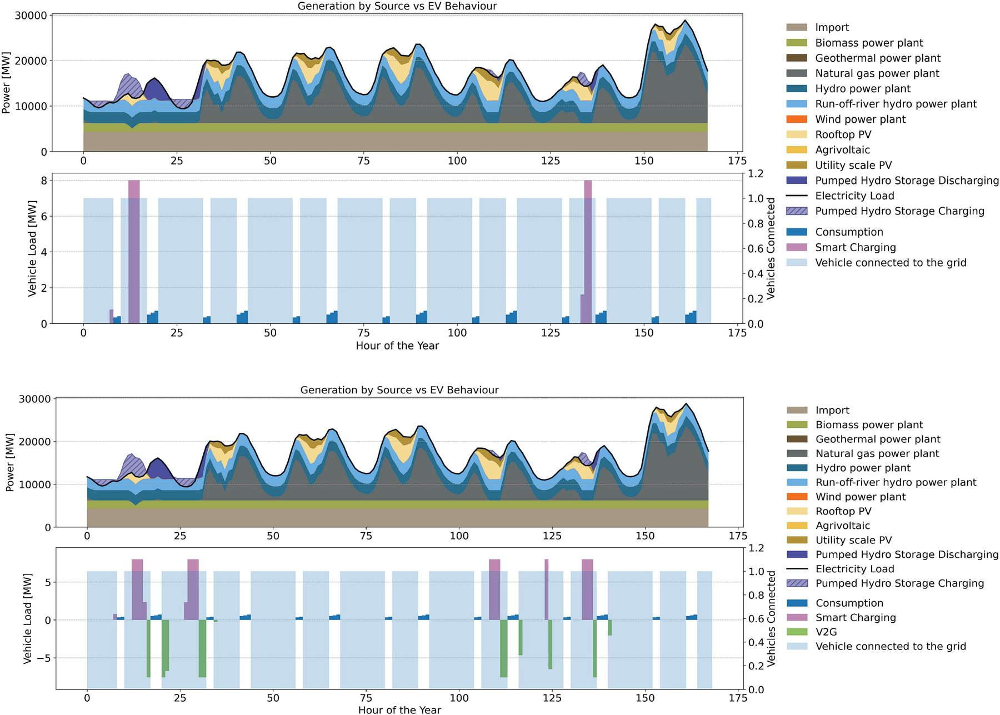

Research explained · Sustainable Energy Technologies and Assessments, 2026
Smart charging and vehicle-to-grid (V2G): what electric cars can do for Italy's power system
Millions of electric cars will add a lot of electricity demand, but their batteries also sit parked most of the day. We modelled Italy's power system from 2025 to 2050 to see what happens if part of the fleet charges smartly or feeds power back to the grid. Smart charging and V2G both lower the cost of a net-zero system, and V2G replaces part of the stationary batteries Italy would otherwise have to build.

Three ways to charge an electric car
The study compares three charging strategies:
- Uncontrolled ("dumb") charging. The car starts charging as soon as it is plugged in, whatever the time or the price of electricity. This is how most cars charge today.
- Smart charging. The car still leaves with the charge it needs, but the system chooses when to charge, preferably when electricity is cheap or solar and wind produce more than demand. Power only flows into the car.
- Vehicle-to-grid (V2G). The car can also send power back to the grid when demand peaks. This needs a bidirectional charger, extra metering and grid-code compliance.
We tested cases where 10%, 30% or 50% of cars use smart charging or V2G, with the rest charging in the uncontrolled way. The results below refer to 30% participation.
How we modelled Italy's power system with PyPSA
The work was led by Pranav Deep Kumar, a PhD student I co-supervise at Politecnico di Milano. He built PyPSA-Italy, a model of the Italian power system in the open-source tool PyPSA, with seven nodes (one per Italian electricity market zone) and hourly resolution. For every period from 2025 to 2050, in five-year steps, the model decides how much solar, wind, battery storage and transmission to build and how to run it, at minimum cost and within a CO2 cap that reaches zero in 2050.
The key ingredient is when cars are actually plugged in. We generated hourly charging and availability profiles with the open tool emobpy, using origin–destination travel data from the Lombardy region. In an earlier study with colleagues at Eurac, we checked that emobpy reproduces the daily charging pattern measured on 411,800 charging sessions in Trentino–South Tyrol.
We also gave each option a price. Smart charging needs only control equipment, costed at 50 €/kW. V2G needs bidirectional power electronics, costed at 300 €/kW. Many studies treat this flexibility as free.
Results: how much smart charging and V2G save
Electricity demand grows from 322.8 TWh in 2025 to 388.2 TWh in 2050 in both cases, mostly because of electric vehicles. Fossil generation and imports fall to zero by 2050.
| 2050, 30% of cars taking part | Smart charging | V2G |
|---|---|---|
| Total system cost compared with uncontrolled charging | −1.3% | −3.3% |
| Total annual system cost | 144.0 billion € | 141.0 billion € |
| Stationary battery capacity | −10% vs uncontrolled | a further −39.7% vs smart charging |
| Renewable curtailment | −13% vs uncontrolled | a further −13.9 TWh vs smart charging |
Smart charging saves money mainly by moving car charging to sunny midday hours. That cuts the need for stationary batteries and the amount of solar and wind power that must be thrown away. In the earlier years of the transition the effect is much larger: up to 92% fewer stationary batteries and 48% less curtailment than with uncontrolled charging.
V2G goes further because parked cars act as a distributed battery. They charge at midday and discharge during the evening and night peaks, so the system needs fewer grid-scale batteries and less gas in the transition years.
What changes when V2G is not free
We ran the model twice: once with free smart charging and V2G, as many published studies assume, and once with realistic charger costs. Without costs, the model fits bidirectional chargers to the whole participating fleet, 118.4 GW in 2050. With costs, it builds only 25.6 GW of V2G and keeps 99.2 GW of the much cheaper smart charging. It then adds 31.3 GW of stationary batteries to make up the difference, and the 2050 system cost rises by 1.12%. Ignoring charger costs therefore overstates how much V2G is worth building.
Why location matters: southern solar, northern cars
Because the model has seven zones, it can show where the flexibility is used. The cheapest solar resource, agrivoltaics, is concentrated in the south (zone R5), while 46% of the car fleet is in the north. With V2G instead of smart charging alone, agrivoltaic capacity in the south grows from 46.0 to 71.7 GW and becomes the largest single generator in Italy, at 121 TWh per year. Inter-zonal transmission grows from 179.4 to 186.1 GW to carry the midday surplus to the northern fleets. A single-node model of Italy could not show this interaction between charging, renewables and the grid.
Why hourly EV availability matters
Many models assume that a fixed share of cars is always plugged in. We replaced our hourly profiles with constant availabilities of 20%, 40%, 60% and 80% and re-ran the whole 2025–2050 chain.
- Assuming 20% availability, the model builds 33% more stationary batteries (512.7 instead of 385.4 GW) and 10% less solar, at 1.0% higher cost. Batteries also arrive about ten years too early.
- Assuming 80%, it builds 16% fewer batteries. That system looks 0.3% cheaper on paper but would be short of storage in reality.
- Even 60%, close to the real annual average of 63.8%, gets the total cost right within 0.14% but underestimates battery needs by 14.9 GW, because it misses the dips during commuting hours and the overnight plateau.
Model resolution in time and space is one of the recurring challenges we describe in our article on the challenges of energy system models, and this study shows it changes investment decisions by tens of gigawatts.
Limits of the study
Curtailment in 2050 is high (254.6 TWh with V2G) because the model has no seasonal storage, no exports and no Power-to-X demand to absorb summer solar surplus. Car batteries shift energy within a day, not between summer and winter. The model also leaves out ancillary services such as frequency regulation, distribution grid limits, battery degradation and market behaviour. Adding seasonal storage, Power-to-X and cross-border exchange is the next step. Our study on heat pumps and Power-to-X looks at when those technologies start to pay off.
The study is one of the two main results of the IOMSES project; our summary of the IOMSES results puts it next to a second study on the costs and environmental impacts of V2G for a group of 20 vehicles. The work is part of our research on e-mobility and the grid, which also includes the V2G-BOOST project on bidirectional charging in South Tyrol. It was funded by the MOST Sustainable Mobility Center under Italy's NextGenerationEU recovery plan (PNRR). Model code and data are open on GitHub (PyPSA-Italy).
Frequently asked questions
What is the difference between smart charging and vehicle-to-grid (V2G)?
Smart charging shifts when an electric car charges, for example to midday when solar power is abundant, but power only flows from the grid to the car. Vehicle-to-grid (V2G) also lets the car send electricity back to the grid during demand peaks, which requires bidirectional chargers.
How much can smart charging and V2G save in Italy?
With 30% of electric cars taking part, smart charging lowers the total annual cost of Italy's net-zero power system in 2050 by 1.3% compared with uncontrolled charging. V2G lowers it by 3.3%, even after paying for bidirectional chargers.
Can electric car batteries replace grid-scale batteries?
Partly. In our model, V2G reduces the stationary battery capacity needed in 2050 by 39.7% compared with smart charging alone. Electric car batteries handle daily shifts well but cannot solve the seasonal gap between summer solar surplus and winter demand.